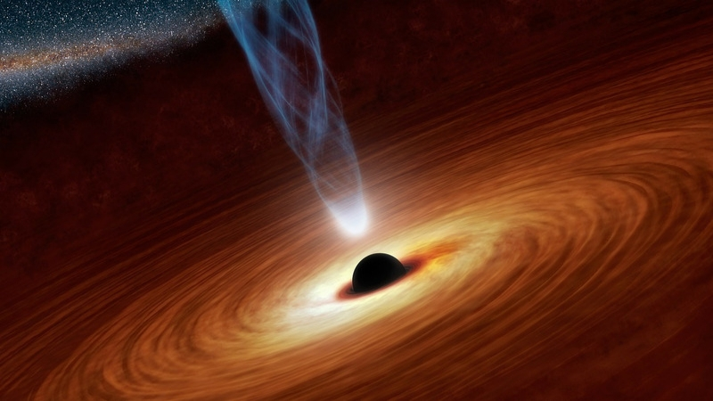
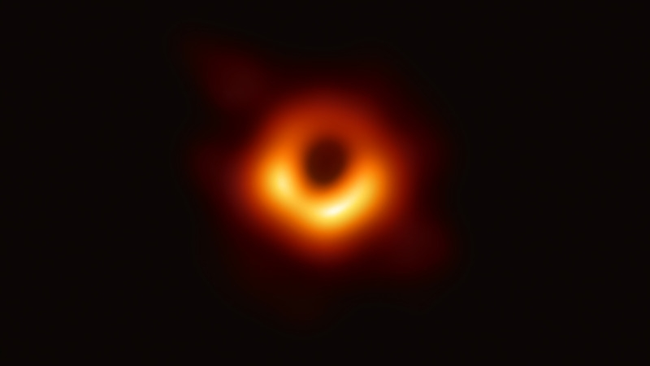

O que sabemos sobre os Buracos Negros
Os buracos são um dos corpos celestes mais misteriosos do universo. Um buraco negro possui uma enorme quantidade de matéria compactada em um espaço pequeno do universo.
Os buracos negros foram previstos grassas a teoria da relatividade geral de Albert Einstein 🔗, prevendo que uma massa suficientemente compacta pode deformar o espaço-tempo para formar um buraco negro.
Em 10 de abril de 2019, a primeira imagem direta de um buraco negro e sua vizinhança foi publicada, a observações feitas pelo Event Horizon Telescope 🔗 em 2017 do buraco negro supermassivo no centro da galáxia de Messier 87.
Buraco Negro Estelar
Um buraco negro estelar pode ser formador por uma estrela super massiva, que colapsam no final de seu ciclo de vida. Após a formação de um buraco negro, ele pode continuar a crescer absorvendo a massa do ambiente.
Buraco Negro Super Massivo
Um buraco negro super massivo pode ser formador por grandes nuvens de gás que se colapsaram sobre a sua própria gravidade, ou aglomerados de milhões de estrelas quando o universo ainda era bem mais jovem e denso.